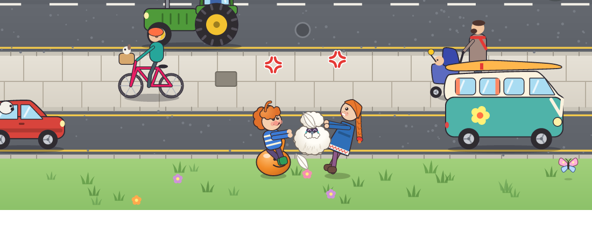

Silkie / 终端模拟器 / macOS + Linux
让终端拥有更丰富的交互。¶

Silkie 是适用于 macOS 和 Linux 的终端模拟器，基于 kitty 开发。它为终端增添了笔和触摸输入、矢量图形、HDR 色彩以及显示时序反馈。
运行熟悉的 shell 和终端应用，也可以开发能够绘图、响应触控笔，并了解当前显示设备特性的软件。
开源 · 主分支：silkie
正在启动 shell…
在独立终端窗口中游玩： Presidential · Silkie Loophole · Ground Stop · Silkie Sprint · Silkie Scramble. 使用全屏占满显示器。 SSH 设置 · 由 CheerpX 提供支持
协议规范与文档
03 / Silkie 扩展
笔、触摸、墨迹、矢量图形、色彩与时序。了解 Silkie 的扩展。
02 / kitty 与 kitten 工具
Silkie 是 kitty 终端模拟器的一个分支。kitty 在传统终端协议之上扩展了图形、键盘等协议，并提供称为 kittens 的工具和插件。阅读 kitty 文档 和 kitten 工具文档。
01 / 终端基础
kitty 所扩展的文本流与 VT/xterm 风格控制序列。阅读基础参考资料。
功能¶
应用可以按需探测和使用 Silkie 的扩展协议。实际支持情况取决于操作系统、输入设备、显示器和窗口合成器；各项规范说明了相应的能力与限制。
字体与排版¶
混用 Iosevka 的无衬线与板状衬线字体，选择从 Thin 到 Heavy 的字重，并控制两个方向的倾斜。按地区设置中日韩字体偏好，同时保持字符宽度和终端网格。字体文件需要单独安装；配置与转义序列见 字体选择协议。
笔、触摸与手势¶
让应用获取压力、倾斜、触摸接触点、平滑滚动和手势事件。使用 show_pointer 工具 查看设备上报的信息。
矢量图形与墨迹¶
发送路径、带样式的文本和场景，由终端按显示尺寸渲染；支持会话字体、文本测量、嵌套窗口裁剪和 HDR 色彩。笔输入到达时即可由终端绘制笔迹，无须等待每个采样点往返应用。
Send one-, two-, four-, or eight-bit grayscale pixels and RGB565 without requiring compression; Packed image formats describes the compact wire encodings, independent of the display's color model. Palette images adds images of one- to eight-bit indices into a palette of RGBA colors that can be replaced without resending the pixels. Send 16-bit gray, RGB10A2 and 16-bit RGBA at their full precision, encoded with sRGB, linear, PQ or HLG, so that HDR10 frames go to the GPU as they are; see High precision images. Images of any size are drawn, from tiles when they are larger than a GPU texture, with mipmaps when shown smaller than they are, and stay without a storage quota; see Large images and image storage.
超越普通 SDR 的色彩¶
Use wider color spaces, request brightness above SDR white on supported displays, and give text colors with sixteen bits per channel. Query the available headroom and control transparency at the cell level.
HDR · Wide gamut · Deep colors · Cell alpha
显示信息与画面呈现反馈¶
了解显示设备、接收输入时序信息，并跟踪画面何时呈现。应用可以利用这些报告与终端协调绘制。
游戏¶
体验政治讽刺与经济模拟游戏 Presidential，或在 Silkie Loophole 中扮演浣熊，踏上蒙彼利埃的万圣节讨糖冒险。Ground Stop 让全美国的飞机降落在蒙彼利埃最后一座仍在运行的机场。Silkie Sprint 带你穿越道路和河流；Silkie Scramble 则需要召集小鸡，智取花园里的捕食者。五款游戏均可在浏览器的 Linux 终端中运行，也支持原生 Silkie 和 kitty 终端。
安装¶
二进制软件包可从面向 Apple Silicon macOS 的 Homebrew 和面向 Linux 的 APT 仓库 获取。支持的平台与安装说明见 安装 Silkie。以下命令可配置软件源，并同时安装 Silkie 和 Iosevka 字体：:
curl -fsSL https://silkie.goblinreactor.com/install.sh | bash
安装脚本会在添加或修改 Goblin Reactor 软件源之前征求许可，并安装未经修改的 Iosevka 字体及其 SIL 开源字体许可证声明。Silkie 默认使用较宽的 Extended 字形。
macOS 应用没有使用 Apple Developer ID 签名，也未经 Apple 公证，因此 macOS 会拒绝直接打开下载的应用。在 macOS 上，安装脚本和 Homebrew cask 会在安装后清除 silkie.app 的隔离标记，让 Silkie 可以正常打开。如果 macOS 仍然阻止打开，请在“系统设置 > 隐私与安全性”中批准 Silkie，或运行 xattr -dr com.apple.quarantine /Applications/silkie.app。
从源码构建时，请使用 silkie 分支。你需要 Git、C 编译器和 Go；Linux 还需要 安装指南 中列出的系统库。构建脚本会下载其余构建依赖。
git clone --branch silkie https://github.com/adamdeprince/silkie.git
cd silkie
./dev.sh build
./kitty/launcher/kitty
安装后，运行 silkie 启动终端，使用 silkie-kitten 运行配套工具。上面的源码构建命令直接从检出目录运行开发版本。上游 kitty 软件包安装的是上游 kitty；如需 Silkie 的扩展，请使用上述软件包或源码。
文档¶
Silkie 的规范说明其新增功能。理解完整终端行为时，请同时参阅上游参考文档。
查找协议规范¶
开发者指南汇集了终端标准、kitty 与 kitten 手册、Silkie 扩展规范和源代码链接。
使用扩展参考手册¶
查阅转义序列、字段、单位、回复和平台限制。从能力探测与通用消息封装开始，再选择所需协议。
参阅上游手册¶
kitty 文档说明 Silkie 继承的终端行为。kittens 是使用并扩展 kitty 的工具和插件，可用于图像显示、SSH 集成和远程控制等任务。
kitty 手册 · Kitten 工具 · kitty 协议